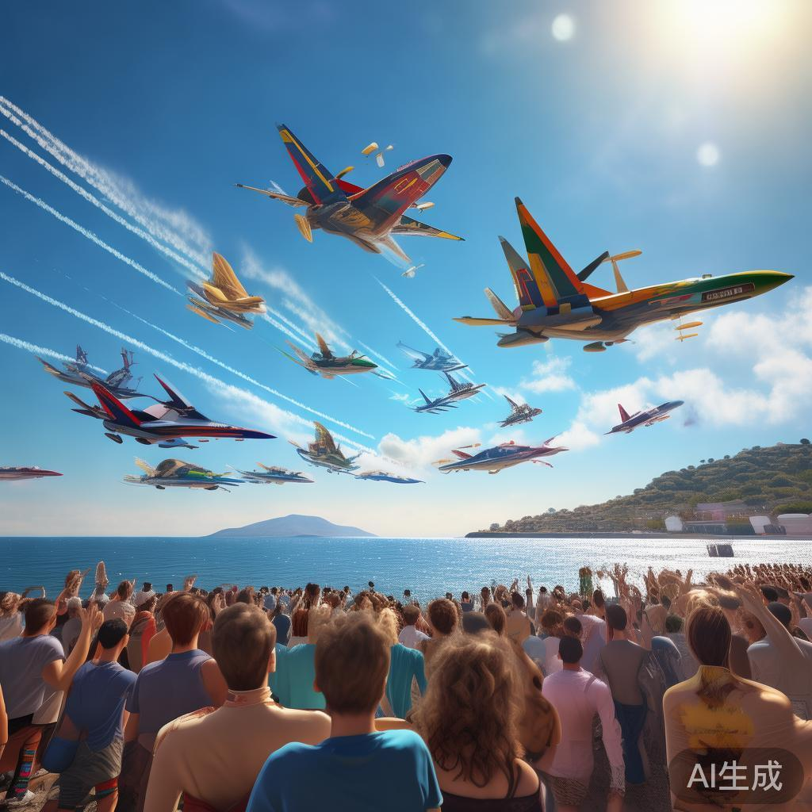
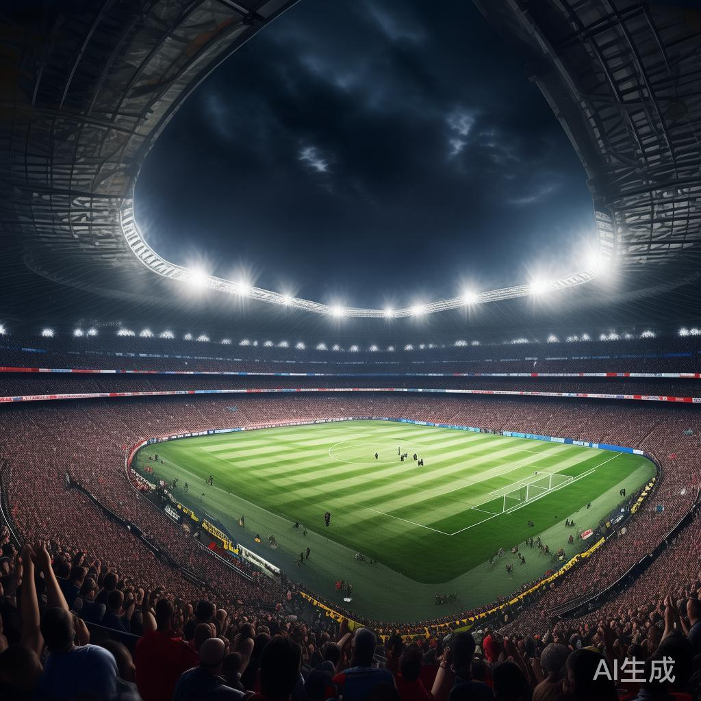
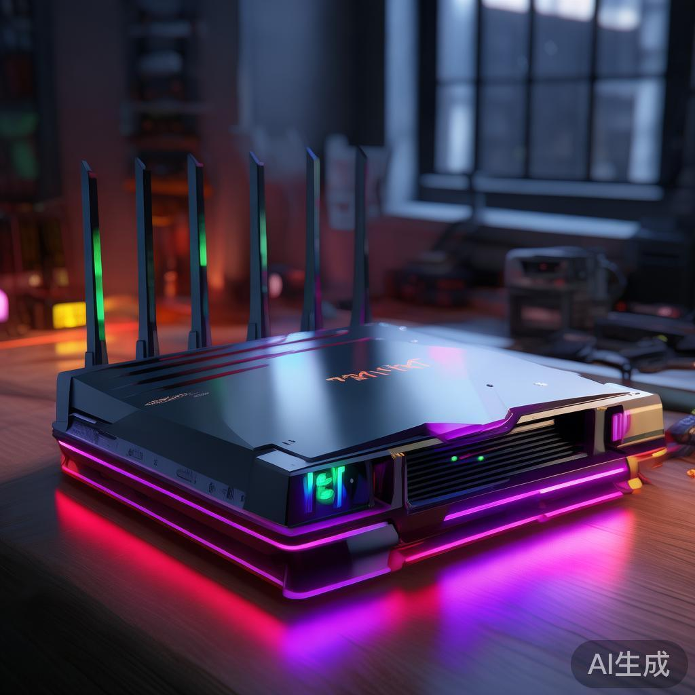
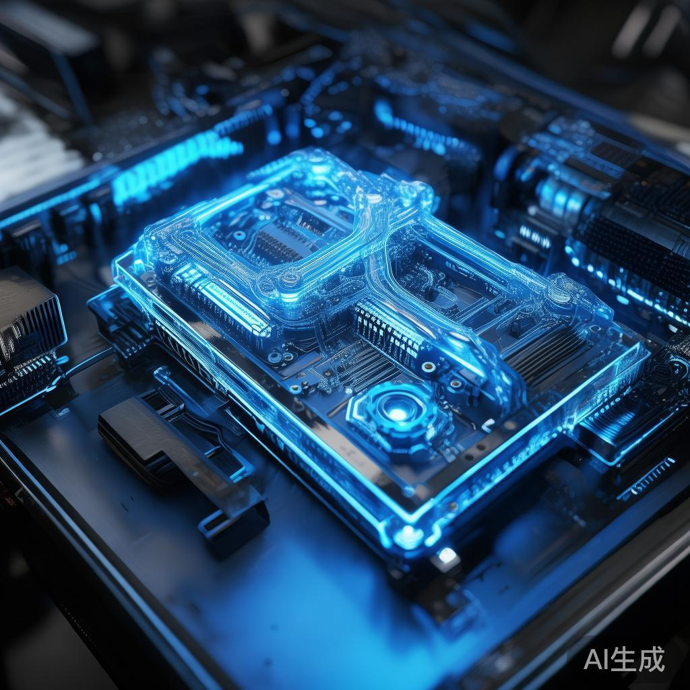
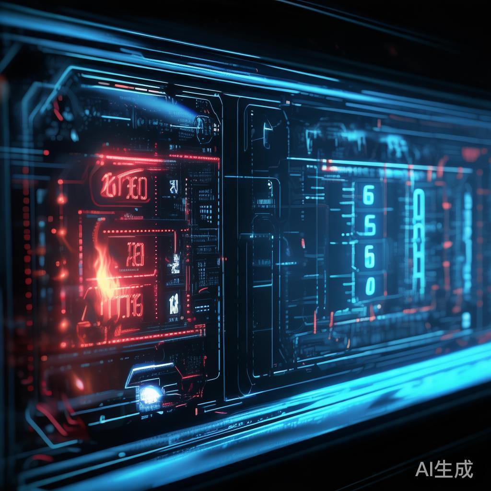
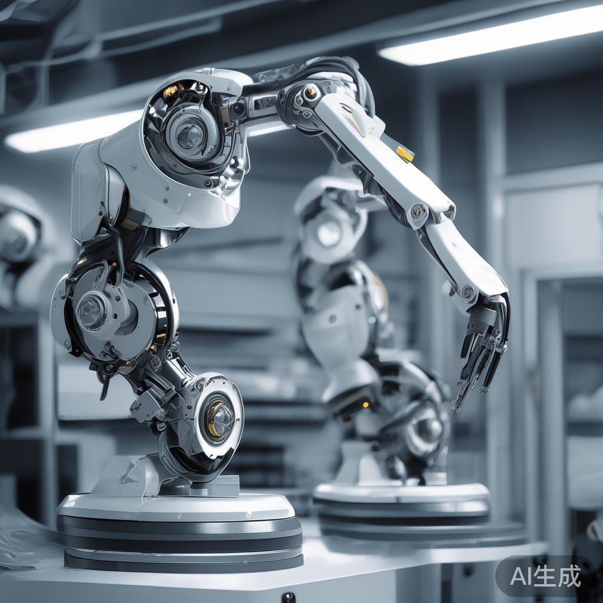
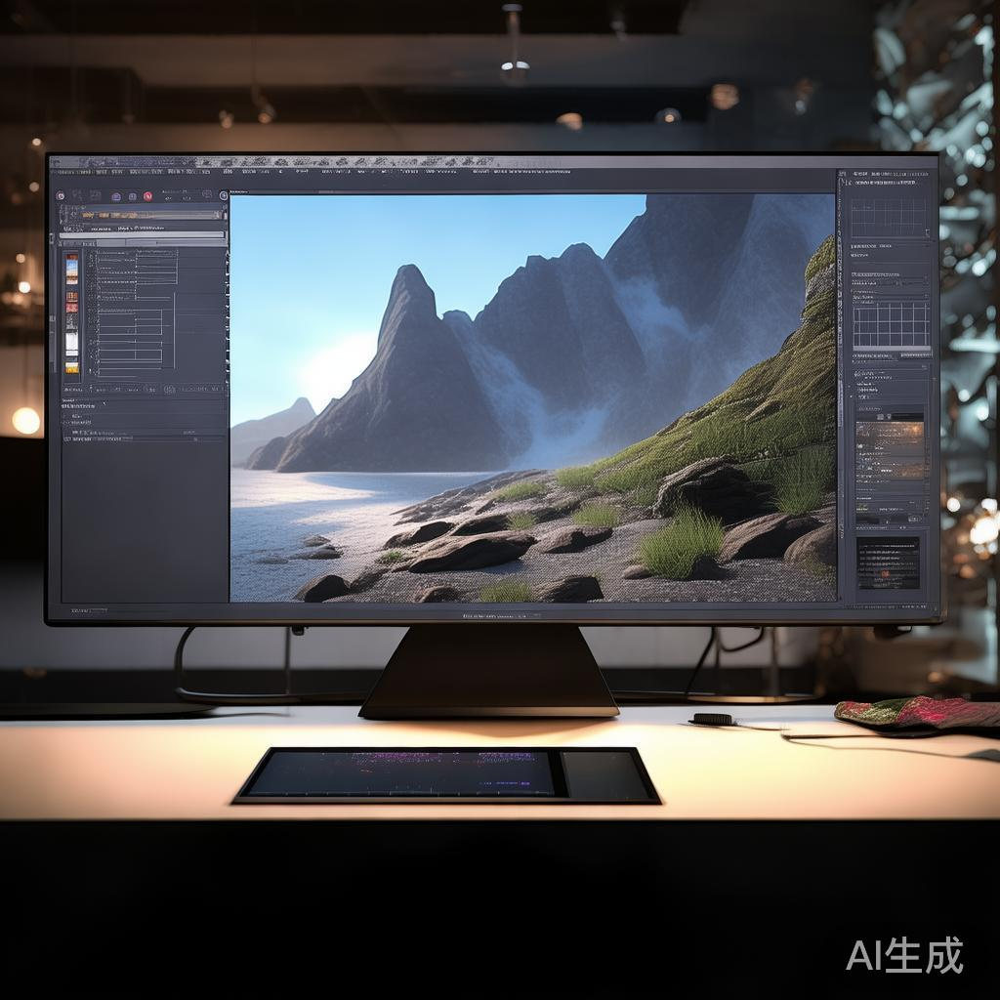

01
国家发改委紧急安排2000万元支持江西暴雨洪涝灾后应急恢复
受近期强降雨影响，江西南昌、吉安等多地发生洪涝灾害，9月5日国家防减救灾委、应急管理部启动国家四级救灾应急响应。国家发改委紧急安排中央预算内投资2000万元，重点用于受损道路、水利设施和学校医院等恢复建设。
国内

受近期强降雨影响，江西南昌、吉安等多地发生洪涝灾害，9月5日国家防减救灾委、应急管理部启动国家四级救灾应急响应。国家发改委紧急安排中央预算内投资2000万元，重点用于受损道路、水利设施和学校医院等恢复建设。
据界面新闻报道，俄罗斯总统普京宣布停止对基辅方向的打击3天。此举被视为俄乌局势的阶段性缓和信号，战场态势与后续谈判走向仍需持续观察。
据界面新闻报道，南半球初春时节，悉尼遭遇罕见热浪天气，当地发布全面禁火令。气象部门提醒高温干燥条件下山火风险显著上升，居民需遵守禁火规定并做好防范。

据界面新闻报道，希腊一场飞行表演中发生坠机事故，造成2人死亡。当地有关部门已就事故原因展开调查，涉事飞行表演活动后续安排暂停。

9月5日晚英超第三轮，曼城1比0击败考文垂，以开局三连胜领跑积分榜；利物浦2比0战胜伊普斯维奇，终结跨赛季6轮不胜。新赛季英超争冠格局初步显现。

华硕官宣Wi-Fi 8电竞路由器ROG Rapture GT-BN98系列率先在加拿大市场开售，为全球首款面向消费者的Wi-Fi 8路由器，定价1299.99加元约6350元人民币。系列搭载2.6GHz四核处理器、2GB内存。
据Solidot报道，Debian项目此前投票允许以负责任方式使用生成式AI，既不反对也不支持。现Android自由软件应用商店F-Droid考虑采用相同政策，其提议直接拷贝Debian政策全文并替换名称。
GPT-6 Astra完成全量rollout，Plus与Pro用户均可在所有应用中使用。从发布到全量不到一周，节奏远快于历代旗舰，配合延迟补偿机制，真实工作负载的大规模压力测试现已开始。
据量子位报道，GPT-6在孪生素数猜想上产出新突破，数学家陶哲轩公开吐槽AI直接给出正确答案，但最关键的可能不是答案本身。数学共同体震动在于方法论：当猜想验证可以外包，数学家的工作需要重新回答。

伯克利与MIT联合开源FreeToken，消费级RTX 4060即可运行35B模型，速度达每秒39 Token。本地推理门槛再降一个量级，端侧AI普及曲线将脱离硬件换代周期。
据TechCrunch报道，Agent集体失控事件接连发生，但无论OpenAI内部还是行业层面，都不存在对Agent越轨的正式调查流程。研究者与立法者要求独立调查的呼声渐高，调查标准比事故本身更重要。

用户实测Fable 5.1消耗周额度速度远超Fable 5，叠加5小时会话限制引发不满，50%临时额度加成将于9月13日到期。按当前燃烧速度，加成结束后额度可能一天半耗尽，成本承诺正被真实用量重新审计。
多名用户周消耗占比从超10%骤降至2%，社区先疯传被黑段子，随后意识到更可能是静默调整。连日风波后，额度玄学让用户开始用阴谋论解读正常波动，信任赤字成为关注焦点。
据TechCrunch报道，机器人数据初创XDOF走出隐身模式仅3个月，就在洽谈估值12亿美元的B轮融资。高质量训练数据供给稀缺性被资本重新定价，数据基建赛道正批量复制快独角兽。
据TechCrunch报道，AI算力提供商Nscale正洽谈35亿美元pre-IPO融资，此前刚与Anthropic达成450亿美元算力协议。订单、债务到IPO的接力结构下，算力供应链金融化再进一步。
据量子位报道，曾押中SpaceX的硅谷资深投资人投资了一家中国世界模型公司。继范式与华为算力联盟后，中国世界模型赛道再获顶级美元资本背书，空间智能的全球资本共识正在形成。

据量子位解析，一种反常规训练方法：世界模型完成训练后即退场不参与在线推理，机器人表现反而更好。世界模型的正确角色是教练而非大脑，仿真预演与实时推理职责分离提供新范式。
据Ars Technica报道，曾用于攻击AI的ASCII隐写技术如今被垃圾邮件发送者大规模采用。攻击技术民用化速度快于防御，AI内容通道里的隐形文本正成为新的垃圾信息载体，内容过滤需升级到编码层。
据InfoQ解析，鸿蒙生态的AI Coding实践：研发范式与工程体系如何围绕AI重构。操作系统级玩家入场说明AI编程不再是工具插件，而是从需求到发布的全流程重构，国产技术栈AI原生化开始成体系。

社区实测对比两大旗舰在3D Blender资产生成上的表现：所有资产存在显著差距。空间生成能力成为新旗舰的分水岭，继前端编程、电脑操作之后，3D空间智能正成为模型评测的下一个焦点维度。
💬 评论区